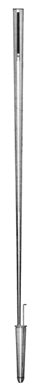
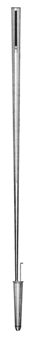
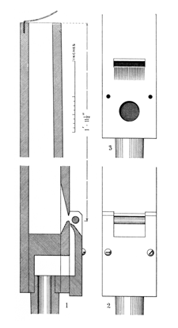
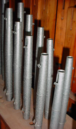
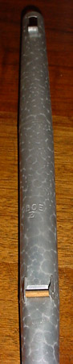

|
Hautbois d'Orchestre French Orchestral Hautboy English Orchestral Oboe English |
An 8' stop voiced to imitate the orchestral instrument of the same name. (The ordinary Oboe is usually not imitative.) This stop has been made in a number of forms, nearly always as a reed, but sometimes as a flue. George Willis is credited with the invention of this stop, and the form used by him is described by Audsley as follows:
The resonators are of an extremely slender inverted conical form, devoid of bells, and having closed upper ends and long and narrow slots adjoining them. This form of resonator is shown in [the illustration reproduced here], which is drawn from the Willis Orchestral Oboe in the Organ in the Town Hall, Huddersfield. The reeds or éschalotes are of very small scale, and have their stopped ends formed at an acute angle upward from the lower edge of their faces. The tongues or languettes are very narrow, of good substance, and finely curved, as usual in all Willis reeds.
Bonavia-Hunt describes two other reed forms:
One method is to utilise the normal oboe tube and bell, and considerably reduce the scale of both. The shallot is likewise reduced in scale, with a mere saw-cut openint, the base being sloped backward. This form of shallot can be used in all three types here described, and is known as the orchestral oboe shallot. The scaling of the Walker orchestral oboe (which is made according to this pattern) is as follows: CC (8ft.), 2 9/16 in. at the top of the bell, 1 1/16 in at the bottom; tenor C (4 ft.), 1 15/16 in. at the top of the bell, 3/4 in. at the bottom. The bells are half-capped, and have a small hole pierced about midway between the top and the bottom of the bell.
The third variety is that advocated by the late Mr. J. M. Boustead, who adopted it, as the result of many experiments, in his large chamber organ at Westfield, Wimbledon Common, now removed and used as material for two separate organs. Mr. Boustead tookan ordinary oboe pipe and cut the tube down to a third its length, making the middle C (2ft.) pipe about 8in. long and the tenor C (4 ft.) pipe about 1ft. 4in. long. The diameter of the tenor C pipe thus cut down would be about 5/8 in. Aboce treble C (1 ft.), the third length becomes too short for practical purposes and the pipes have to be made harmonic, - that is, two-thirds the normal oboe length. Adjustable caps are, of course, necessary for regulation.
Skinner describes his own Orchestral Oboe as follows:
This follows the physical and acoustical form of its namesake fairly closely. Its shallot is very slender and sharply beveled at its lower extremity. The openings are narrow and the tongues thin. The resonators are slender and capped. While the open valves of the orchestral instrument determine the pitch of their associated tube length, they do not cancel the qualifying effect on the tone. To parallel this effect in the organ pipe, we cap the top ande cut the tuning slot well below the cap. This forms a pocket which contributes a sympathetic glow or sweetness to an otherwise acid tone.See Basson-Hautbois.
The orchestral instrument has a single tube for all the notes. The diameter of the tubes is therefore relatively larger for each note in going up the scale, since it remains constant, while the length becomes shorter. This results in a gradual change in quality in going up or down the scale. In developing an equivalent voice for the organ, this progressive change in character must be provided. The scale of pipes is therefore modified in going from one end of the group to the other, as is necessary in the development of all orchestral voices for the organ.
William E. Haskell invented a labial (flue) form of the Orchestral Oboe, used in a number of organs built by Estey. Audsley provides the following description:
The [drawings reproduced below] clearly show the form and construction of the middle c1 pipe of this labial Oboe, 8 ft. The body of the pipe measures 7/8 inch square, internally, at is mouth line, and, while its width remains the same, its depth is gradually reduced to 11/16 inch at its open end, the reduction commencing at twelve inches above the mouth and taking a curved form from that point in the front of the pipe, as indicated in the section, 1. The block is sunk 3/8 inch below the lower lip of the mouth. The mouth is inverted, and its lower lip is sloped on the inside down to the block level and slightly rounded. The upper lip is filed on the outside so as to produce a sharp edge slightly back from the face of the pipe. All these peculiarities are accurately indicated in the Section. The mouth is a fraction over 1/8 inch in height. The cap is made sufficiently long to extend about 1/8 inch above the upper lip of the mouth, and is cut away and sloped on the outside so as to support the small cylindrical harmonic bridge in position, as shown in the Section, 1, and Front View, 2. The cap is hollowed on the inside, and is filed so as to produce a amsll sharp-edged wind-way, just sufficient to admit the passage of a strip of a playing-card. The cap is not nicked. The under lip of the mouth has twenty-seven straight and cleanly-cut nicks, as depicted in Diagram 3, which shows the mouth and lower part of the pipe with the cap removed. The illustrations are so accurately drawn to scale that further description of the sound-producing portion of the pipe is unnecessary. The pipe is tuned in the usual way by a metal shade at top. The stop is voiced on wind of 3 1/2 inches, the pipes requiring a very small supply.
|  |
These two photographs show an Oboe from Estey opus 2375, c.1925
(courtesy of Brian Graham). Notice the slightly tapered upper
bodies, similar to the Spindelflöte.
 |
 |
Osiris contains over 100 examples of Orchestral Oboe, five examples of Orchestral Hautboy, and four of Hautbois d'Orchestre, all of the latter dating from the 20th century. The earliest examples are given below.
Orchestral Hautboy 8', Solo; St. Michael's, Tenbury, England; Harrison 1869.
Orchestral Oboe 8', Solo; Queen's College, Oxford, England; Walker 1866.
Orchestral Oboe 8', Solo; Alexandra Palace, London, England; Willis 1875.
Orchestral Oboe 8', Solo; City Hall, Glasgow, Scotland; Gray & Davison 1853, 1855, 1876.
See the Sound Files appendix for general information.
| Orchestral Oboe 8', Choir | Kellogg Auditorium, Battle Creek, Michigan, USA | Aeolian-Skinner, 1933 | St. Anne |
|
Original website compiled by Edward L. Stauff. For educational use only. OrchOboe.html - Last updated 17 May 2008. |
Home Full Index |
{kind=link}
{kind=link}
{kind=link}